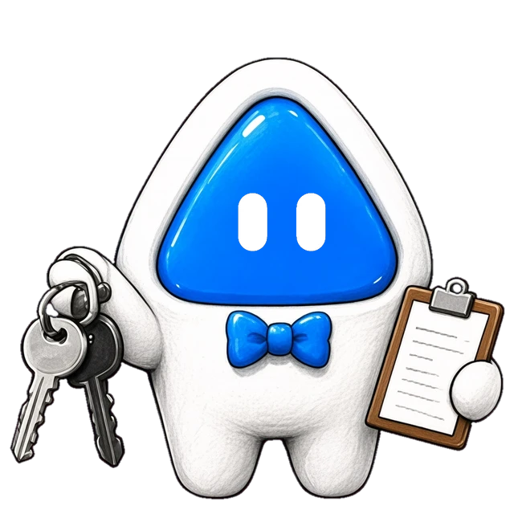

Передай рутину
ИИ-сотруднику
Без кода, без API, без промптов. 4 встречи, и твоя повторяющаяся задача уходит сотруднику.
Бесплатная диагностика с НикомПриходи, разберём твою ситуацию за 15 минут

- Практикум
- До 10 человек
- 4 онлайн‑встречи
- Чат до 28 декабря
- Старт 15 декабря
Для кого
Для тех, кто делает повторяющуюся задачу сам, знает, как выглядит хороший результат, и хочет передать её ИИ-сотруднику.
- Фрилансер, интегратор, небольшая студия. Пока выполняешь заказ, упускаешь следующие. Сотрудник следит за выбранной биржей, отбирает проекты по твоим критериям и приносит подходящие заказы с черновиками откликов. Кому отвечать, решаешь ты.
- Маркетолог, агентство, консультант. Работы много, а показать новому клиенту нечего: результаты разбросаны по чатам. Сотрудник собирает переписку, отзыв и скриншоты в кейс и отмечает, какие результаты подтверждены, а чего не хватает.
- Эксперт, автор канала. Хочешь выходить к новой аудитории, но до поиска партнёров не доходят руки. Сотрудник подбирает площадки, объясняет выбор и готовит предложение о совместном эфире.
- Предприниматель. Клиенты пишут в мессенджеры вечером и в выходные. Сотрудник разбирает переписку, приносит список «кто спросил и замолчал» и черновики ответов. Отправляется после твоего «да».
Не подойдёт, если:
- хочется послушать про нейросети и ничего не делать;
- нет повторяющейся задачи, которую ты уже делаешь сам.
Что получишь
Цель Практикума — один законченный рабочий процесс на твоей задаче, согласованный на диагностике до оплаты.
Внутри может быть один ИИ-сотрудник или связка из нескольких. Его ты настраиваешь сам, на своих материалах, и сам исправляешь настройки, когда результат не устраивает.
Плюс умение настроить следующего сотрудника под другую задачу по тому же принципу: разложить задачу, объяснить её сотруднику обычными словами, проверить результат, поставить «без моего „да“ наружу не уходит».
Сотрудник собирается в твоём аккаунте Grok Bot и остаётся у тебя. Подписку Grok Bot ты оплачиваешь сам, по тарифам сервиса.
Делаешь практику — двигаешься к результату. Не делаешь — результата не будет.
Чего не обещаю: дохода, «замены сотрудника» и процентов экономии. Результат зависит от задачи и от того, как ты делаешь практику.
Как попасть
Сначала бесплатная диагностика, 15 минут. Это отбор до оплаты. На созвоне:
- ты показываешь последний реальный пример задачи;
- фиксируем, что поступает на вход и что сотрудник должен вернуть на выходе;
- смотрим, какие нужны доступы и платные сервисы;
- решаем, успеваем ли собрать это за 2 недели.
По итогам один из трёх ответов: берём задачу как есть, сужаем её до части, которая успевается за 2 недели, или не берём. Оплата — только после диагностики и не позже 11 декабря.
Программа
4 встречи онлайн в Яндекс Телемосте, по 60 минут и дольше, время московское. Лекций нет, работа идёт на твоей задаче.
-
Встреча 1, вторник 15 декабря, 19:00
Запуск на своём материале
Описываешь правила своей работы. Подбираем готовую основу или собираем роль с нуля. Сразу запускаешь сотрудника на своём материале.
-
Встреча 2, суббота 19 декабря, 11:00
Разбор результата и настройка
Разбираем первый результат. Уточняешь задачу обычными словами, добавляешь образцы, при необходимости связываешь несколько ролей. Между встречами даёшь сотруднику рабочее задание.
-
Встреча 3, вторник 22 декабря, 19:00
Ошибки реальной работы
Смотрим, что произошло в реальной работе: где сотрудник выбрал не то, что додумал, какое решение должен был передать тебе. Исправляешь настройки и запускаешь заново.
-
Встреча 4, суббота 26 декабря, 11:00
Самостоятельный запуск
Проводишь свежую задачу от начала до результата без подсказок. Затем настраиваешь ещё одну простую роль по тому же принципу.
Время встречи можно сдвинуть, только если согласны все участники группы.
Чат
Чат работает с 15 по 28 декабря, отвечаю в течение дня.
В чат приносишь конкретный пример: что поручил, что получил и где расходится с ожиданием. Например:
«Поручил отобрать заказы на лендинги до 30 000 ₽. Получил 12, из них 5 на дизайн без вёрстки. Где не так?»
Вместе ищем причину. Правку и повторный запуск делаешь сам.
Почему я
Я Ник Хьюстон. Свою рутину отдаю ИИ-сотрудникам: они ищут заказы на биржах, разбирают мои мессенджеры и готовят черновики для канала. Кода для этого я не писал.
Как сотрудник разбирает мои чаты
Отзывов пока нет: это первый поток.
Правила
Здесь не отсиживаются. Из группы исключаем, если:
- пропустил 2 встречи из 4 без предупреждения;
- дважды подряд не сдал практику, то есть не прислал отчёт в чат до срока, который я назвал на встрече (после первого раза — одно предупреждение);
- хамишь, спамишь или выносишь из чата чужие данные (имена, контакты, скрины переписки, сведения о чужих клиентах). Тут сразу.
Исключили — вернём деньги за то, что ты не успел пройти, по оферте. Обратно в этот и следующие потоки не возьмём.
Цена и оплата
- Оплата после диагностики и не позже 11 декабря. Одним платежом по СБП, чек «Мой налог» сразу. Я самозанятый (НПД).
- В Практикуме до 10 человек. Стартуем 15.12 при любом числе участников. Цена и состав не зависят от числа участников.
- Подписка Grok Bot оплачивается участником отдельно, по тарифам сервиса.
Передумал до первой встречи — вернём всё. Ушёл позже — вернём за то, что не успели пройти: каждая из 4 встреч стоит 5 000 ₽, чат обратной связи — 5 000 ₽ за 14 дней.
Возврат по СБП в течение 10 дней. Подробно — в оферте.
Пишешь мне в Telegram — я вижу твоё имя и ник и использую их только чтобы договориться о созвоне. Политика
Даты
- с 1 декабря
- заявки на диагностику
- до 11 декабря
- набор и оплата
- 15, 19, 22 и 26 декабря
- встречи: вт 19:00, сб 11:00 МСК
- с 15 по 28 декабря
- чат
Время встречи можно сдвинуть, только если согласны все участники группы.
Начнём с одной твоей задачи
Пришли голосом или текстом один пример: «Я регулярно делаю вот это. Хочу, чтобы сотрудник приносил мне вот такой результат». Созвонимся на 15 минут и решим, подходит ли задача для Практикума. Диагностика бесплатная и ни к чему не обязывает.
Бесплатная диагностика с НикомПриходи, разберём твою ситуацию за 15 минут
Пишешь мне в Telegram — я вижу твоё имя и ник и использую их только чтобы договориться о созвоне. Политика